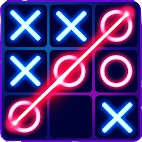

tris

Tris è un gioco multiplayer formato da 2 giocatori, in cui il giocatore 1 verrà rappresentato con "1" e il giocatore 2 verrà rappresentato con "2"; inizialmente ci sarà un quadrato formato da 9 zeri. Per decidere dove inserire il simbolo, bisogna prima scrivere il numero della riga e poi quello della colonna, entrambe partono da zero. Il primo che riesce a inserire lo stesso simbolo 3 volte di fila (sia in colonna, sia in riga che in diagonale) vincerà la partita, se questo non accade comparirà la scritta pareggio.